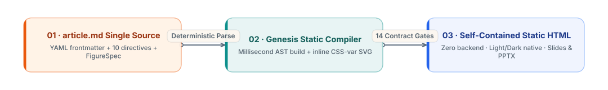

零首屏闪烁与缓存一致性
GitHub Pages 对异步拉取请求默认施加 10 分钟浏览器缓存，而直接编译为静态 HTML 主文档可触发条件校验请求，刷新即刻获取最新内容。
以 article.md 为唯一人工编辑真源，在构建保存时毫秒级编译出零后端依赖、100% 兼容 GitHub Pages 的自包含静态 HTML，完整保留渐进披露阅读、双语切换、全屏幻灯片演示、公式推导、双语矢量图与交互沙盒插槽。
---
title: Genesis 创世纪样板：纯静态 Markdown 扩展编译管线全特性验证 || Genesis Benchmark: Pure Static Extended Markdown Compilation Pipeline
eyebrow: Genesis Static Markdown Pipeline || Genesis Static Markdown Pipeline
brand: Study Room Genesis || Study Room Genesis
date: 2026-11-23
strict_i18n: true
strict_density: true
lead: 以 article.md 为唯一人工编辑真源，在构建保存时毫秒级编译出零后端依赖、100% 兼容 GitHub Pages 的自包含静态 HTML，完整保留渐进披露阅读、双语切换、全屏幻灯片演示、公式推导、双语矢量图与交互沙盒插槽。 || Taking article.md as the single human authoring source, this pipeline compiles self-contained static HTML in milliseconds with zero backend dependencies and 100% GitHub Pages compatibility.
panel_label: 双模静态编译架构 || Dual-Mode Static Architecture
panel_title: 写极简 Markdown，交付满血静态交互页 || Write Clean Markdown, Ship Full Static Interactive Pages
panel_desc: 编译产物预挂齐全部 8 个纯前端静态脚本与 4 套样式表，无需任何服务端运行时即可在任意静态托管环境直接运行 [1]。 || Compiled artifacts bundle all 8 frontend scripts and 4 stylesheets, running directly on any static host without server runtime [1].
panel:
- 唯一真源 (article.md) — 消除手写 800 行 HTML 模板负担 || Single Source (article.md) — Eliminates 800-line handwritten HTML boilerplate
- 确定性静态编译 — 100% 通过 validate.js 全部 14 项门禁 || Deterministic Compilation — Passes all 14 validate.js static gates
- 声明式沙盒插槽 (:::sandbox) — 无损挂载复杂 Canvas 交互实验 || Declarative Sandbox Slot (:::sandbox) — Mounts Canvas simulations cleanly
metrics:
- 支持标准组件指令 || Canonical Directives | 9 类 | 覆盖章节、手风琴、洞察网格、对比、流程、引用、公式、双语图与沙盒 || Covers sections, accordions, insight grids, comparisons, flows, callouts, math, diagrams, and sandboxes
- 静态契约门禁通过率 || Static Gate Pass Rate | 14 / 14 | 100% 满足脚本顺序、零内联样式、双语安全与演示表面契约 || 100% compliant with script order, zero inline styles, bilingual safety, and surface contracts
- 运行时后端服务依赖 || Backend Dependencies | 0 | 纯静态 HTML 直出 GitHub Pages，首屏零异步拉取白屏或缓存滞后 || Pure static HTML for GitHub Pages with zero async fetch FOUC or cache lag
style:
accent: "#ff7a00"
teal: "#0d8f8c"
---
## #overview 01 / Architecture Overview :: 为什么选择编译期纯静态双模管线 || Why Compile-Time Pure Static Dual-Mode Pipeline
如果仅在浏览器端通过异步请求动态拉取 Markdown 渲染 DOM，会在页面加载时与现有的演示幻灯片收集器、伴读提取器及静态质量门禁产生时序冲突 [1]。采用编译期静态生成方案后，作者依然只维护极简的 Markdown 源稿，而产出的静态页面拥有与手写 HTML 完全一致的 DOM 契约 [2]。
:::insight-grid { cols: 3, title: "三大核心工程收益 || Three Core Engineering Gains" }
::card 01
### 零首屏闪烁与缓存一致性 || Zero FOUC and Cache Consistency
GitHub Pages 对异步拉取请求默认施加 10 分钟浏览器缓存，而直接编译为静态 HTML 主文档可触发条件校验请求，刷新即刻获取最新内容。 || GitHub Pages caches async fetch requests for 10 minutes, whereas precompiled static HTML documents use conditional revalidation on refresh.
::card 02
### 六大前端运行时零改动复用 || Zero-Change Reuse of Six Runtimes
演示模式、语音合成讲稿、流式伴读、数学公式、灯箱与几何导出引擎均在页面加载时直接读取就绪的静态 DOM 节点。 || Presentation, narration, assistant, math, lightbox, and PPTX export runtimes read ready-made static DOM nodes on load.
::card 03
### 161 篇存量文章零侵入共存 || Zero-Intrusion Coexistence with 161 Articles
存量静态文章保持原状不改一行，新增或修订文章通过 Markdown 编译内核生成静态产物，实现零风险渐进演进。 || Existing 161 static articles remain untouched while new or revised articles compile from Markdown sources without regression risk.
:::
:::callout { title: "核心架构红线 || Core Architectural Guardrail" }
编译产物本身必须是完整、自包含、开箱即用的纯静态 HTML 页面，放到 GitHub Pages 或任意静态文件服务器上零配置直接运行，严禁依赖任何运行时后端接口才能打开页面。 || The compiled artifact must be a complete, self-contained static HTML page that runs directly on GitHub Pages without any backend service.
:::
## #comparison 02 / Architecture Comparison :: 纯客户端异步拉取 vs 编译期纯静态生成 || Client-Side Async Fetch vs Compile-Time Static Generation
下面从人工编写成本、演示模式兼容性、静态门禁校验以及缓存表现四个维度，对比纯客户端动态拉取方案与编译期纯静态双模管线 [1]。
:::comparison { title: "两种 Markdown 演进路线对比 || Two Markdown Evolution Approaches" }
::versus 方案 A：客户端运行时拉取 || Approach A: Client Runtime Fetch
### 空壳 HTML + 浏览器异步解析 || Shell HTML + Async Browser Parsing
首屏需要额外发起网络请求拉取源稿，DOM 生成晚于 `DOMContentLoaded`，导致幻灯片分页器漏扫章节，且空壳文件无法通过静态门禁。 || Requires an extra network fetch before rendering DOM after DOMContentLoaded, breaking slide collection and static validation gates.
::versus 方案 B：Genesis 纯静态编译 || Approach B: Genesis Static Compilation { highlight: true }
### Markdown 真源 + 毫秒级静态 HTML 生成 || Markdown Source + Millisecond Static HTML Build
人工只改干净的 `article.md`，编译器基于 `markdown-it` 输出 100% 符合设计系统契约的静态 HTML，兼顾编写效率与满血交互体验。 || Authors edit clean article.md while the markdown-it compiler outputs static HTML that satisfies every design system contract.
:::
| 评估维度 | 纯客户端动态拉取 | 手写 800 行静态 HTML | Genesis 纯静态编译管线 |
|------|------|------|------|
| 人工源文件体积 | 极简（~150 行 MD） | 臃肿（500~3000 行 HTML） | 极简（~150 行 MD） |
| GitHub Pages 零后端兼容 | 存在 10 分钟二次缓存滞后 | 100% 原生静态 | 100% 原生静态 |
| 演示模式与 PPTX 导出 | 异步竞态易失效 | 完整支持 | 完整支持 |
| validate.js 14 项静态门禁 | 空壳无法通过结构检查 | 需人工维护属性转义 | 编译器自动保证 100% 通过 |
### 渐进披露折叠面板：编译期如何自动补齐双语与无障碍属性 || Progressive Disclosure: Auto-Injected Bilingual and ARIA Attributes
在 Markdown 源稿中，作者只需书写标准的三级标题 `###` 或 `:::accordion` 容器，编译器便会自动生成带 `data-accordion`、`aria-expanded` 及中英双语属性的手风琴抽屉，在阅读模式下收起支线细节，在演示模式下自动拆分为独立幻灯片。
### 为什么不把全部 161 篇存量文章一次性逆向转回 Markdown || Why Existing 161 Articles Are Not Force-Converted in Bulk
存量文章中包含 31 篇重度定制的多模块交互沙盒与特定业务样式，强行批量逆向转换会造成视觉折损。双轨共存策略让存量页面保持 100% 稳定，同时赋予新文章极速 Markdown 创作体验。
## #workflow 03 / Compilation Workflow :: 编译流水线、双语矢量图与数学公式验证 || Compilation Workflow, Bilingual Diagrams, and Math Verification
编译器以 `assets/vendor/markdown-it-14.1.0/markdown-it.min.js` 为底层解析内核，串联 YAML 元数据解析、LaTeX 公式保护令牌、9 类语义容器转换与静态门禁自检 [2]。
:::flow { title: "Genesis 五步确定性编译流水线 || Five-Step Deterministic Compilation Flow" }
1. **解析 YAML Frontmatter || Parse YAML Frontmatter** — 提取双语标题、导语、右侧摘要卡片、底部核心指标卡与主题色令牌，构建 `.hero` 首屏结构。 || Extract bilingual titles, lead copy, hero panel, metrics cards, and theme tokens to build the .hero header.
2. **保护行内与块级数学公式 || Protect Inline and Display Math** — 在进入 Markdown 解析前识别 `$...$` 与 `$$...$$`，避免下划线与星号被误解析为斜体标签。 || Capture inline and block LaTeX expressions before Markdown parsing so underscores remain intact.
3. **展开 9 类语义容器指令 || Expand Nine Semantic Directives** — 将 `:::insight-grid`、`:::comparison`、`:::accordion`、`:::flow`、`:::callout`、`:::diagram` 与 `:::sandbox` 映射为标准 DOM。 || Transform all nine directive blocks into canonical Study Room DOM structures.
4. **挂载纯前端静态运行时 || Attach Pure Static Runtimes** — 按 `validate.js` 严格顺序注入 `article-common.js`、`article-presentation.js`、`article-math.js` 等静态资源。 || Inject article-common.js, article-presentation.js, article-math.js, and companion scripts in strict contract order.
5. **执行 14 项静态契约自检 || Run 14 Static Contract Checks** — 校验引号转义、零内联样式、零箭头函数、演示表面声明与参考文献引用完整性。 || Verify quote escaping, zero inline styles, zero arrow functions, presentation surfaces, and citation integrity.
:::
:::diagram { src: "./media/genesis-pipeline", drawio: "./media/genesis-pipeline.drawio", title: "Genesis 纯静态双模编译管线架构图 || Genesis Pure Static Compilation Architecture" }
图 1：从唯一人工真源 `article.md` 到 GitHub Pages 自包含静态 HTML 的三阶段确定性编译链路，支持中英双语 SVG 自动切换与 `.drawio` 源文件下载。 || Figure 1: Three-stage deterministic compilation pipeline from article.md to self-contained GitHub Pages static HTML with automatic bilingual SVG switching.
:::
在数理推导与性能建模方面，编译器原生支持行内公式如阻尼包络衰减率 $\gamma = e^{-\lambda t}$ 以及独立块级公式（自动映射为 `.math-block[data-latex]` 供 `article-math.js` 渲染）：
$$
\mathcal{L}_{\text{compile}}(M) = \sum_{k=1}^{N} \left\| \Phi_{\text{static}}\!\left(\text{AST}(M_k)\right) - H_k^{\star} \right\|_2^2 = 0
$$
同时原生支持标准 ```` ```mermaid ```` 图表围栏，在静态页面与演示模式中自动渲染拓扑图：
```mermaid
graph LR
MD["article.md 源稿"] --> AST["markdown-it 编译内核"]
AST --> HTML["自包含静态 HTML"]
HTML --> GHP["GitHub Pages 零后端托管"]
```
## #sandbox 04 / Interactive Sandbox :: 声明式纯静态交互沙盒插槽验证 || Declarative Pure Static Interactive Sandbox Slot
对于需要实时参数推演或 Canvas 物理仿真的 L3 级文章，`:::sandbox` 指令提供了干净的挂载契约：Markdown 源稿只负责声明容器 ID、标题说明以及同目录纯静态 `.js` / `.css` 路径，交互逻辑完全在浏览器端独立运行，无需任何后端服务器支持 [1][2]。
:::sandbox { id: "genesis-wave-sandbox", script: "./genesis-sandbox.js", style: "./genesis-sandbox.css", title: "阻尼谐波包络纯静态交互仿真台 || Damped Harmonic Envelope Static Interactive Simulator", desc: "点击上方频率档位按钮，直接在浏览器本地 Canvas 重绘阻尼谐波曲线与包络线，验证零后端依赖的 L3 级重度交互能力。 || Click the harmonic frequency buttons to redraw the damped wave and envelope curve on a local HTML5 Canvas with zero backend dependencies." }
纯静态交互沙盒插槽演示：所有计算与绘图均由同目录 `genesis-sandbox.js` 在本地浏览器完成。 || Pure static sandbox slot demonstration: all computation and rendering run locally in the browser via genesis-sandbox.js.
:::
:::timeline { title: "并行创世纪三阶段演进路线图 || Three-Phase Genesis Rollout Timeline" }
1. **Phase 1：纯静态扩展编译内核与标杆验证 || Phase 1: Static Compiler Kernel and Benchmark** — 完成 `tools/markdown-compiler/` 模块化内核、CLI 编译工具与全特性样板页，100% 通过 14 项静态门禁。 || Deliver modular compiler kernel, CLI tool, and full-feature benchmark page passing all 14 static gates.
2. **Phase 2：交付看板 Docs 在线协同与保存即编译 || Phase 2: Delivery Board Docs Editing and Save-to-Compile** — 在看板 Docs 视图聚合 `posts/*/article.md`，保存瞬间自动触发毫秒级静态编译。 || Aggregate article.md files in Delivery Board Docs view and trigger millisecond static compilation on save.
3. **Phase 3：一键发布至 GitHub Pages 与按需纳管 || Phase 3: One-Click GitHub Pages Publish and On-Demand Adoption** — 成对提交 `.md` 与静态 `.html`，外部 GitHub Pages 在 30~90 秒内准实时呈现更新。 || Commit paired Markdown and static HTML to GitHub Pages for near-real-time external updates.
:::
## #references 05 / References :: 参考来源 || References
- [1] Study Room Markdown Framework Feasibility Evaluation — https://github.com/illusion615/KnowledgeHub/blob/main/docs/markdown-framework-feasibility-evaluation.md | 双模编译架构评估报告与五大工程阻碍分析 || Dual-mode compilation architecture evaluation report and engineering barrier analysis
- [2] markdown-it 14.1.0 Specification — https://github.com/markdown-it/markdown-it | 仓库内置的标准 CommonMark 解析器与扩展插件机制 || Built-in CommonMark parser and extension architecture in assets/vendor
01 / Architecture Overview
如果仅在浏览器端通过异步请求动态拉取 Markdown 渲染 DOM，会在页面加载时与现有的演示幻灯片收集器、伴读提取器及静态质量门禁产生时序冲突 [1]。采用编译期静态生成方案后，作者依然只维护极简的 Markdown 源稿，而产出的静态页面拥有与手写 HTML 完全一致的 DOM 契约 [2]。
GitHub Pages 对异步拉取请求默认施加 10 分钟浏览器缓存，而直接编译为静态 HTML 主文档可触发条件校验请求，刷新即刻获取最新内容。
演示模式、语音合成讲稿、流式伴读、数学公式、灯箱与几何导出引擎均在页面加载时直接读取就绪的静态 DOM 节点。
存量静态文章保持原状不改一行，新增或修订文章通过 Markdown 编译内核生成静态产物，实现零风险渐进演进。
02 / Architecture Comparison
下面从人工编写成本、演示模式兼容性、静态门禁校验以及缓存表现四个维度，对比纯客户端动态拉取方案与编译期纯静态双模管线 [1]。
首屏需要额外发起网络请求拉取源稿，DOM 生成晚于 DOMContentLoaded，导致幻灯片分页器漏扫章节，且空壳文件无法通过静态门禁。
人工只改干净的 article.md，编译器基于 markdown-it 输出 100% 符合设计系统契约的静态 HTML，兼顾编写效率与满血交互体验。
| 评估维度 | 纯客户端动态拉取 | 手写 800 行静态 HTML | Genesis 纯静态编译管线 |
|---|---|---|---|
| 人工源文件体积 | 极简（~150 行 MD） | 臃肿（500~3000 行 HTML） | 极简（~150 行 MD） |
| GitHub Pages 零后端兼容 | 存在 10 分钟二次缓存滞后 | 100% 原生静态 | 100% 原生静态 |
| 演示模式与 PPTX 导出 | 异步竞态易失效 | 完整支持 | 完整支持 |
| validate.js 14 项静态门禁 | 空壳无法通过结构检查 | 需人工维护属性转义 | 编译器自动保证 100% 通过 |
在 Markdown 源稿中，作者只需书写标准的三级标题 ### 或 :::accordion 容器，编译器便会自动生成带 data-accordion、aria-expanded 及中英双语属性的手风琴抽屉，在阅读模式下收起支线细节，在演示模式下自动拆分为独立幻灯片。
存量文章中包含 31 篇重度定制的多模块交互沙盒与特定业务样式，强行批量逆向转换会造成视觉折损。双轨共存策略让存量页面保持 100% 稳定，同时赋予新文章极速 Markdown 创作体验。
03 / Compilation Workflow
编译器以 assets/vendor/markdown-it-14.1.0/markdown-it.min.js 为底层解析内核，串联 YAML 元数据解析、LaTeX 公式保护令牌、9 类语义容器转换与静态门禁自检 [2]。
提取双语标题、导语、右侧摘要卡片、底部核心指标卡与主题色令牌，构建 .hero 首屏结构。
在进入 Markdown 解析前识别 $...$ 与 $$...$$，避免下划线与星号被误解析为斜体标签。
将 :::insight-grid、:::comparison、:::accordion、:::flow、:::callout、:::diagram 与 :::sandbox 映射为标准 DOM。
按 validate.js 严格顺序注入 article-common.js、article-presentation.js、article-math.js 等静态资源。
校验引号转义、零内联样式、零箭头函数、演示表面声明与参考文献引用完整性。

article.md 到 GitHub Pages 自包含静态 HTML 的三阶段确定性编译链路，支持中英双语 SVG 自动切换与 .drawio 源文件下载。下载 .drawio在数理推导与性能建模方面，编译器原生支持行内公式如阻尼包络衰减率 \gamma = e^{-\lambda t} 以及独立块级公式（自动映射为 .math-block[data-latex] 供 article-math.js 渲染）：
同时原生支持标准 ```mermaid 图表围栏，在静态页面与演示模式中自动渲染拓扑图：
graph LR
MD["article.md 源稿"] --> AST["markdown-it 编译内核"]
AST --> HTML["自包含静态 HTML"]
HTML --> GHP["GitHub Pages 零后端托管"]04 / Interactive Sandbox
对于需要实时参数推演或 Canvas 物理仿真的 L3 级文章，:::sandbox 指令提供了干净的挂载契约：Markdown 源稿只负责声明容器 ID、标题说明以及同目录纯静态 .js / .css 路径，交互逻辑完全在浏览器端独立运行，无需任何后端服务器支持 [1][2]。
点击上方频率档位按钮，直接在浏览器本地 Canvas 重绘阻尼谐波曲线与包络线，验证零后端依赖的 L3 级重度交互能力。
完成 tools/markdown-compiler/ 模块化内核、CLI 编译工具与全特性样板页，100% 通过 14 项静态门禁。
在看板 Docs 视图聚合 posts/*/article.md，保存瞬间自动触发毫秒级静态编译。
成对提交 .md 与静态 .html，外部 GitHub Pages 在 30~90 秒内准实时呈现更新。
05 / References